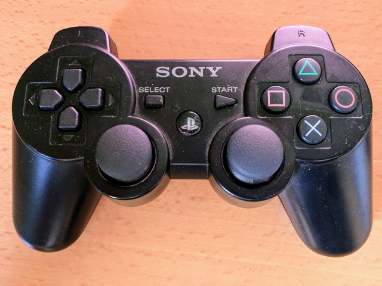
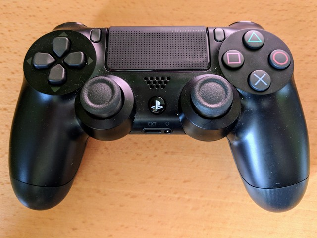
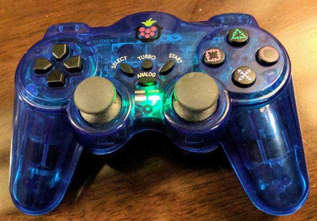
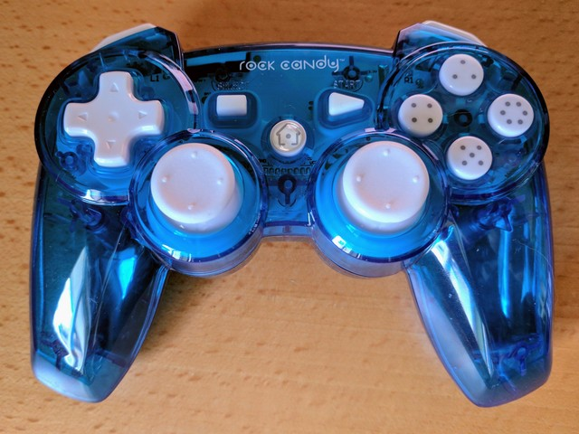
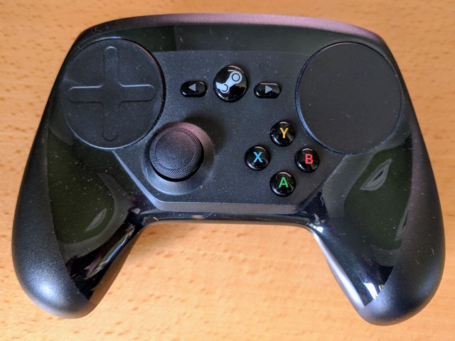
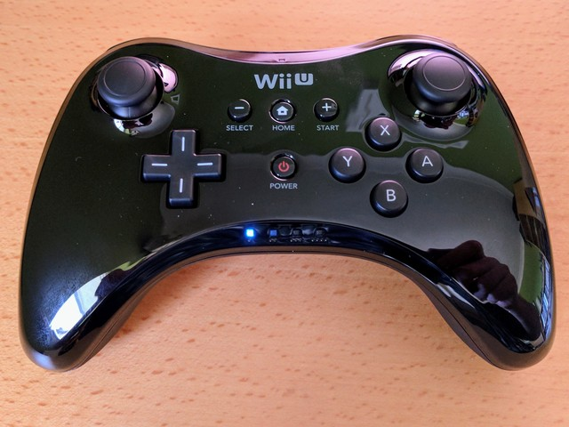
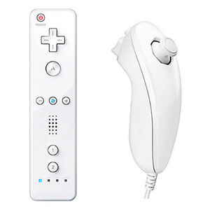
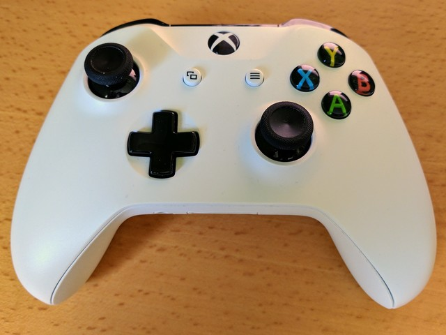
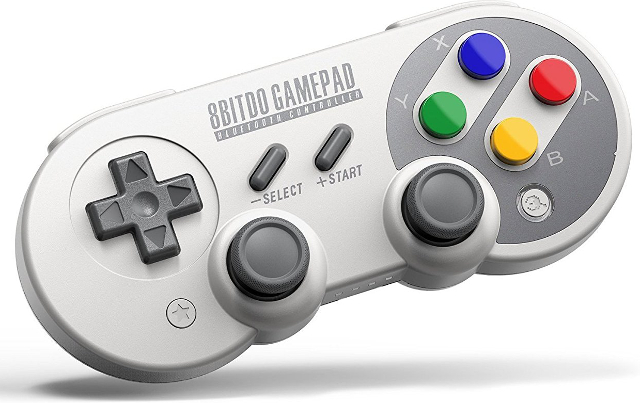
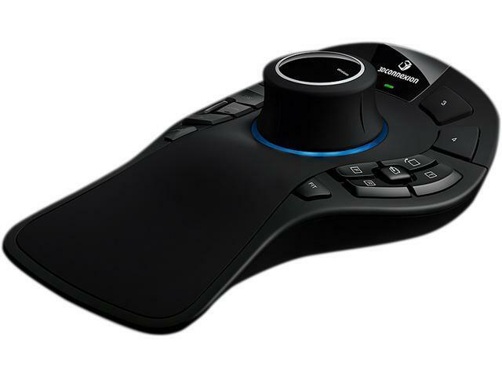

Welcome to Approximate Engineering’s Python Game Controller Documentation!¶
This library simplifies access to the axes and buttons on game controller hardware from Python. It was originally written to support my PiWars robots, and remains focused on similar projects, but can be used wherever game controller functionality is required. The current code only supports Linux based systems, including the Raspberry Pi.
Note
Check out the Change Log to see what’s new. In particular, version 2.3 introduces changes to the way controllers are discovered and allows for multiple controllers to be used simultaneously. This release also drops support for Python2, this and subsequent releases will be Python3 only.
Supported Controllers¶
         {kind=link}
{kind=link}
{kind=link}
{kind=link}
{kind=link}
{kind=link}
{kind=link}
{kind=link}
{kind=link}
{kind=link}
In general you don’t need to code to a specific controller, but some may need extra steps when connecting to your Pi or other computer. In other cases, some controllers offer unique features such as the PS4’s light bar. You can see more details for specific controller types at the following:
- PlayStation 3 Controller Support
- PlayStation 4 Controller Support
- PiHut Controller Support
- Rock Candy Controller Support
- Steam Controller Support
- Wii Remote Pro Controller Support
- WiiMote Controller Support
- XBox-One S Controller Support
- 8Bitdo SF30Pro/SN30Pro Controller Support
- Wired SpaceMouse Pro Support
Contributors¶
- Tom Oinn (@approx_eng) wrote and maintains the bulk of this library. Follow me for updates!
- Keith Ellis (@PiTutorials) contributed initial support for Rock Candy controllers.
- Mike Horne (@recantha) add support for the PiHut controller and an example for the CamJam Edukit 3 Robot
- Tom Broughton (@dpolymath) added support for the SF30Pro controller.
- Clare Macrae (@ClareMacraeUK) helped herd the documentation beasts.
Getting the code¶
You can install the code using pip, you’ll have to add a few native libraries first though:
$ sudo apt-get install python-dev python-pip gcc
$ pip install approxeng.input
(The exact dependencies may vary depending on your operating system, they come from using evdev and having to compile that particular python module against whatever underlying libraries your OS is using). I strongly recommend using a virtual environment (virtualenv) so you don’t have to install python libraries as root.
Note
The controller support code is written in Python, but relies on some underlying operating system functionality which is exclusive to Linux based computers like the Pi. As a result, it won’t work on Windows or OSX. If you need to handle joysticks on those platforms I recommend taking a look at PyGame, which includes joystick support amongst its other functionality.
To work with the code on other platforms you’ll want to clone it from GitHub, it’s available under the ASL, the same as almost everything Python based. Documentation (this site) is generated using Sphinx.
Contents¶
- Change Log
- Simple Usage
- Standard Names
- Pairing Controllers over Bluetooth
- API Documentation
- Common APIs
- Binding - approxeng.input.selectbinder
- Controller Discovery - approxeng.input.controllers
- PlayStation 3 Controller Support
- PlayStation 4 Controller Support
- XBox-One S Controller Support
- Rock Candy Controller Support
- Steam Controller Support
- Wii Remote Pro Controller Support
- WiiMote Controller Support
- PiHut Controller Support
- 8Bitdo SF30Pro/SN30Pro Controller Support
- Wired SpaceMouse Pro Support
- Adding support for a new controller type
- Examples
- Advanced Usage Guide
- LEDs and Battery Monitoring